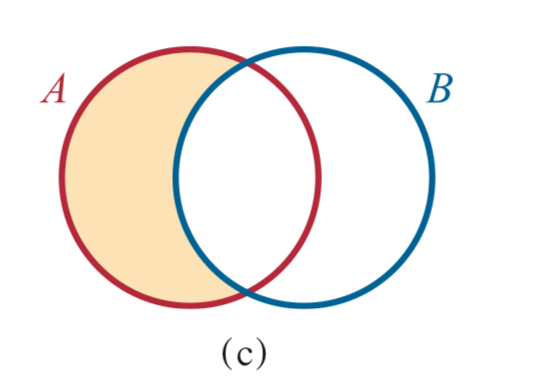

計數原理#
命題#
一個能判斷正確是否為真的問題或敘述就叫做 命題，例如三角形內角和為180º是真的命題，1+1=3是錯誤的命題等等
還有一個問題的反面稱為否定命題，例如三角形的內角和不是180ª之類的，假設一命題為 P，則他的否定命題可記為 \(\neg\) P 或是 ~P
Note
當P,Q都是對的時候，P且Q為真(P \(\wedge\) Q)
如果P,Q其中一個是對或兩個都對的時候,P或Q為真 (P \(\vee\) Q) eg.
\((3 > 3) \wedge (3 = 3)\) 為假
\((3 > 3) \vee (3 = 3)\) 為真
Note
早上起床去刷牙，這件事情中，早上起床是刷牙的充分條件，刷牙是早上起床的必要條件，也就是說
假設P是Q的充分條件，則
假設
Q發生的時候P一定會發生，但是P發生時Q不一定會發生
假設
P跟Q互為充分與必要條件時，PQ互為充要條件
集合#
Attention
定義集合
\(A = \{1,2,3,4,5\}\)
\(B=\{3,4,5,6\}\)
一個集合可以表示為 \(S=\{1,2,3,4\}\) 或是 \(S=\{x| 1 \leq x \leq 4\}\)
其中，1,2,3,4是集合中的元素。元素不限種類，集合也可以是另一個集合的元素，例如 \(N = \{ \{1,2,3\}, 4, 5\}\)，在集合N中有3個元素，{1,2,3}跟4,5。
今天有一個元素3他在集合S裡面，則我們可以寫作 \(3 \in S\)
另一個元素10不在集合S裡面，我們寫作 \(10 \not\in S\)
Tip
我們用n(S)用來表示集合的元素個數,例如 n(A)=3
交集#
Note
A:你覺得義大利麵要配什麼醬料才好 B:我覺得義大利麵應該就要配42號混凝土
Q:試求A跟B講的話的相關程度
交集指的是兩個集合相同的地方，則集合A與B的交集可以表示為 \(A \cap B = \{3,4,5\}\)
聯集#
聯集是指兩個集合佔的所有部分，可以寫為 \(A \cup B = \{1,2,3,4,5,6\}\)

差集#
差集是兩個集合做運算，可以表示為 \(A - B = \{1,2,3\}\)
子集合#
當一個集合被包含在另外一個集合裡面時，我們稱被包住的那個集合為 子集合 ，就像是現在這個子集合是集合的子集合(?)
今天有一個集合 \(S=\{1,2,3\}\) 他被包含在A裡面，這時候我們就可以寫成 \(S \subseteq A\) 或是 \(S \subset A\) (最下面那一槓是等於的意思，就是有可能等於A)
我們可以用文氏圖來圖像化的表示集合間的關係，例如今天有一群集合
可以畫成
Note
如果有一個集合是空的可以表示為 \(\varnothing\) (空集合)(這個之後會用到)
宇集#
宇集是一個集合的範圍，常用符號為U，假設今天一個集合N在宇集U裡面，則 \(\nexists \ a, a \in N \wedge a \not \in U\)
舉個實際一點的例子，假設今天有一個集合屬於 \(\mathbb{N}\) ，那他就不可能有一個元素叫做2.5
再舉個例子，假設今天有一個集合叫做火鍋，那裡面一定不會有芋頭的元素(非常棒對吧)(?)
補集#
補集是一個集合裡面，除了集合本身以外在宇集範圍裡面的所有東西，舉個例子
今天集合A在宇集 \(\{1,2,3,4,5,6,7,8,9,10\}\) 的補集就是 \(A' = \{6,7,8,9,10\}\)
再舉個例子，今天集合白飯在壽司的宇集裡面的補集就是生魚片,哇沙米跟醬油 (這人是不是餓了)
計數原理#
講白話文就是數數的方法
窮舉法與樹狀圖#
窮舉法是在看到題目之後腦袋一片空白的補救方法(也是最原始的方法)，就是把它可能的情況一個一個列出來
舉個例子，今天你在麥當勞點餐的時候，除了點主餐以外，還可以選套餐，這時候的你在想說我有幾種的選擇方式，在不知道有其他方法的時候就直接列出來
大麥克
├── 薯條
│ ├── 可樂
│ ├── 雪碧
│ └── 紅茶
├── 沙拉
│ ├── 可樂
│ ├── 雪碧
│ └── 紅茶
├── 雞腿
│ ├── 可樂
│ ├── 雪碧
│ └── 紅茶
├── 雞塊
│ ├── 可樂
│ ├── 雪碧
│ └── 紅茶
└── 冰炫風
├── 可樂
├── 雪碧
└── 紅茶
麥香雞
├── 薯條
│ ├── 可樂
│ ├── 雪碧
│ └── 紅茶
├── 沙拉
│ ├── 可樂
│ ├── 雪碧
│ └── 紅茶
├── 雞腿
│ ├── 可樂
│ ├── 雪碧
│ └── 紅茶
├── 雞塊
│ ├── 可樂
│ ├── 雪碧
│ └── 紅茶
└── 冰炫風
├── 可樂
├── 雪碧
└── 紅茶
這時候你就可以知道他有24種，同時選擇困難症發作的你，又站在自動點餐機前20分鐘(?)
這個方法非常簡單暴力，對吧
加法與乘法原理#
隔天，你又去了麥當勞覓食；這次學乖了，試圖用數學方法加速計算的過程，於是看了看菜單，每種漢堡有5種套餐，總共有3種漢堡，這時候你有5+5+5=15個套餐可以選擇
好不容易算出套餐數的你，動動腦再想想那我有幾種搭配的組合，每個套餐有3種選項，總共有五種套餐，經過精密的計算，每種漢堡有3*5=15個選擇，在3個漢堡有15*3=45個選擇(好多喔)
這樣做是不是快多了呢？（一定是大拇指的啦
取捨原理#
在取餐過後，找個位置坐下，放眼望去有20個人吃麥香雞，15個人吃大麥克，還有5個人兩個都吃(是有多餓)，那在場有幾個人呢(為什麼不直接數人頭就好了)
(試圖無視)我們可以用取捨原理來計算，他的公式是
我們定義集合A是吃麥香雞的人，B是吃大麥克的人，那可以套用成
所以在這間麥當勞有30個人在吃漢堡
隔天，你又去吃麥當勞(請注意身體健康)，發現不一樣的事情，有10個人吃麥香雞，15個人吃豬肉鬆餅堡，5個人吃薯條加冰淇淋，同時
有5個人吃兩種
有2個人吃三種
那這邊總共有多少人呢?(你是Dora嗎)
我們一樣可以用取捨原理計算
定義吃麥香雞為A,豬肉鬆餅堡為B,薯條加冰淇淋為C
帶入情境可以得出
總共有25個人在吃麥當勞。
Tip
這種東西在計算的時候可以簡單理解為 單個相加 兩個一起 三個一起 四個一起…n個一起
然後中間加減號穿插
就是這麼簡單
小練習#
(取捨原理周考)